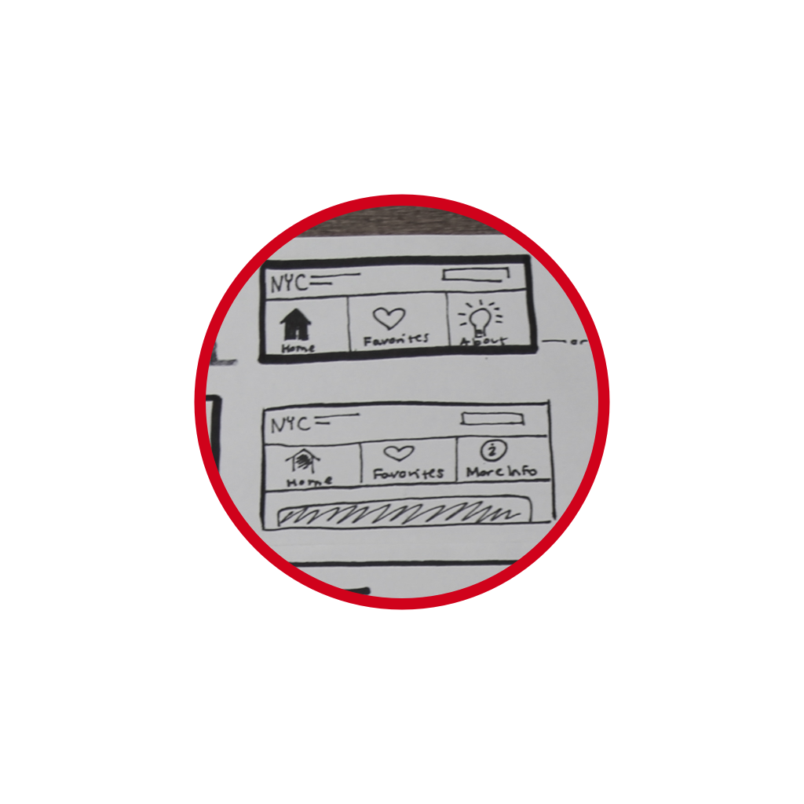
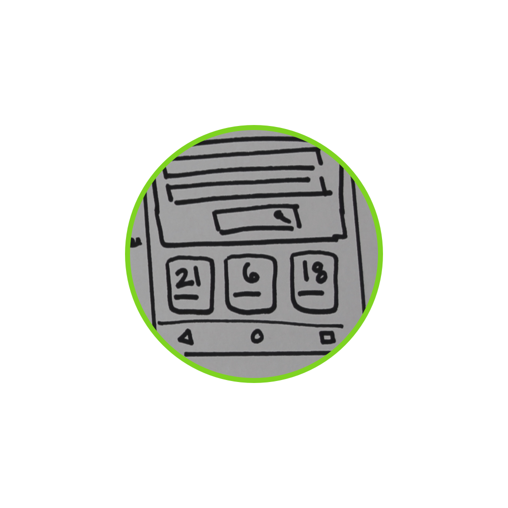

I led the research efforts of NYC School Finder 2.0 in spring of 2017 working with the New York City Department of Education. We presented our design recommendations to senior policymakers at the Tweed Courthouse.
The Opportunity
And even though students can list up to a dozen programs on their application, in reality, they list about 6 or 7 – making it less likely they’ll receive a Round 1 offer.
How might we increase the number of programs families list, thus increaing their chances of getting a round 1 offer?
We had the rare opportunity to make recommendations for School Finder 2.0. – making School Finder not only a directory– but also a guide.
Our Process
Department Provided Resources
24 former Interiews and Usability Tests from release 1.0
We found the majority of frustrations stemmed from not fully understanding the admissions and selection process. This frustration was a common pain point for all:educators, students and their families.
Contextual Inquiry
At the Round 2 high school fair at Martin Luther King campus, we learned firsthand how difficult it is to navigate and track programs of interest. We also learned nothing can replace seeing a school in person or speaking directly with programs representatives.
User + Stakeholder Interviews
3 DOE staff members
4 Guidance Counselors
3 Parents
We found that the needs across the 5 boroughs varies greatly based on location, social economic makeup, ethnicity, and other factors.
User Map of Admissions Process
From our findings, we created a simplified user map and found student and families have questions throughout the entire yearlong admissions process.
Summary of Research Findings
DOE NEEDS
Want families to understand the process and list more programs on the application
STUDENT AND FAMILY NEEDS
Want their questions answered throughout the process and easily track programs of interest
GUIDANCE COUNSELOR NEEDS
Want to educate students and families about the process and promote application diversity
Feature Prioritization
We ideated on a large number of possible features, using the Moscow method below to identify an MVP.
Design Studio
My team ran a design studio, where we rapidly hand sketched our initial design ideas in a collaborative fashion, deciding on a final first iteration together.

Global Navigation
Favorites Page

Key Dates + Deadlines
Usability Testing
We followed the golden rule– test early and test often.
Using a survey and our networks, we identified 9 target users who have or will go through the NYC high school admissions process.
Design Recommendations
Feature 1: Admissions Guide
Findings that led to feature 1:
DOE Provided Research:
Families relied heavily on word-of-mouth
Expert Interviews:
Guidance Counselors meet with students and
families to explain the process even holding
after hours workshops. Variety of factors
affect why families choose programs;
each carrying equal weight and importance
Contextual Inquiry:
Tons of DOE staff, principals, GCs,
and current students accessible to speak with
Change: Creating pages from current static Front of Book
Benefits: Access to key info/questions about process
Technical Requirements:
Search function
Tagging
Accordion function: expand/contract
Feature 2: Global Navigation
Findings that led to feature 2:
DOE Provided Research & Expert Interviews:
Families need guidance and have a range of tech familiarity
Expert Interviews & User Map:
Students and families have questions during various steps of the process, each step is of equal importance
Expert Interviews & Usability Testing:
Increase findability of different pages; Favorites not accessible from main page
Contextual Inquiry:
100% of users did not use NYC DOE logo to go back to main page
Change: New feature
Benefits:
Accessibility and findability of all pages
Technical Requirements:
Add text and icons
Front-end code to link pages
Minimize navigation on scroll (Javascript)
Feature 3: Key Dates and Calendar
Findings that led to feature 3:
DOE Provided Research:
“I didn’t know this deadline was coming” is common complaint
DOE Provided Research & Expert Interviews:
Dates on physical HS application and GCs have to constantly remind
students of key dates and deadlines
User Map:
Students and families need to know key dates and
deadlines throughout the entire process
Contextual Inquiry:
Signing in at a school
fair/open house might affect chances of getting an offer.
Ended the fair with a handful of flyers with dates on them.
Change:
Adding dates from directory and application to the homepage
Benefits:
Visibility of reminders for key dates and deadlines
Technical Requirements:
Add prominent images of key dates to homepage
Move Google calendar link from the footer; make button for increased clickability
Feature 4: Favorites Page
Findings that led to feature 4:
DOE Provided Research & Expert Interviews:
Importance of promoting application diversity;
both realistic and supportive with students and families.
Expert Interviews:
Wanted the ability to save and share program
lists with students and families more easily.
User Map:
Program discovery lasted for several months.
Contextual Inquiry: Flyers and email signs-up
from fair were hard to track.
Change:
Add Reach/Target/Likely sections;
the ability to reorder favorites;
add copy link and share buttons.
Benefits:
Improve diversity of programs on application; reinforces the R/T/L idea (and defines the terms) that you SHOULD apply to a range of programs.
Technical Requirements:
Javascript for drag and drop function
Front-end code to add buttons
I worked alongside a network engineer and web developer to produce the above wireframe recommendations. Over 8 hours, we rapidly worked through the entire UX process from user interviews to design studio, submitting our mid-fidelity
wireframes and a final prototype of our recommendations.